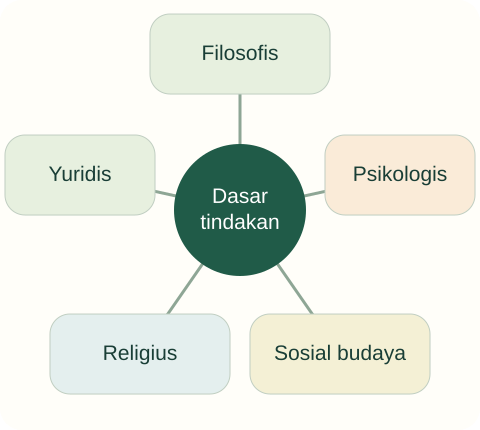

Tujuan pembelajaran
- Membedakan lima landasan pendidikan
- Mengenali jenis klaim dalam alasan guru
- Merumuskan respons berlandaskan tujuan, konteks, dan ketentuan
Landasan filosofis dan religius
Landasan filosofis, termasuk pertanyaan tentang mutu pengalaman yang diajukan Dewey (1938/1997), memeriksa pandangan tentang manusia, pengetahuan, dan nilai. Jika pendidikan diarahkan pada tanggung jawab, guru perlu memberi ruang bagi anak memahami akibat tindakannya dan ikut memperbaiki keadaan. Landasan religius memberi orientasi makna dan nilai dalam tradisi keimanan. Dalam PIAUD, nasihat Luqman pada Al-Qur’an 31:13–19 dapat menjadi bahan telaah tentang tanggung jawab, kesabaran, dan cara memperlakukan orang lain. Implikasi pedagogisnya disusun melalui penalaran guru dengan memperhatikan kemampuan anak.
Landasan psikologis
Landasan psikologis memberi penjelasan tentang cara anak berkembang dan belajar. Pada konflik, guru dapat memeriksa apakah anak siap mendengar pertanyaan, memahami urutan peristiwa, dan memiliki kata-kata untuk menyampaikan maksud. NAEYC (2020) memberi kerangka profesional untuk mempertimbangkan pola perkembangan, individualitas, dan konteks. Klaim bahwa mempermalukan anak akan membuatnya lebih bertanggung jawab perlu diperiksa dengan bukti yang relevan. Perilaku terhenti sesaat dapat menunjukkan bahwa situasi sudah berubah, sedangkan pemahaman perlu diamati pada kesempatan berikutnya.
Landasan sosial budaya
Anak membawa kebiasaan bahasa, cara menyapa, dan pengalaman menyelesaikan persoalan dari lingkungan. Di satu keluarga anak terbiasa menyampaikan alasan langsung. Di keluarga lain anak menunggu ditanya. Guru dapat memakai pengetahuan ini untuk memberi kesempatan bicara yang lebih adil tanpa menetapkan karakter anak dari latar keluarganya. Telaah sosial budaya juga menanyakan siapa yang terbiasa didengar dan siapa yang jarang memperoleh giliran.
Landasan yuridis dan cara menggunakan landasan
Landasan yuridis menetapkan hak, kewajiban, dan batas yang mengikat. UU Perlindungan Anak memberi dasar untuk menjaga anak dari kekerasan di satuan pendidikan. Standar proses memberi acuan mengenai penyelenggaraan pembelajaran. Ketentuan tersebut perlu dibaca sesuai ruang lingkupnya. Dalam satu keputusan, hukum membatasi tindakan, tujuan memberi arah, pengetahuan tentang perkembangan membantu memilih bahasa, dan konteks sosial membantu guru memahami respons. Catatan sesudah kegiatan memberi informasi untuk meninjau keputusan.
Diagram konsep

Atas dasar apa guru memilih cara menanggapi konflik?

Menara balok roboh setelah dua anak menarik alasnya. Guru pertama ingin meminta salah satu anak berdiri di depan kelompok dan mengaku salah. Guru kedua ingin mendengar kedua anak dan membantu mereka memperbaiki bangunan.
- Siapa yang dapat berbicara pada setiap adegan?
- Pilihan tindakan mana yang ditunjukkan setelah balok jatuh?
Pembahasan kasus
Guru dapat mengamankan balok yang berserakan, mendengar urutan kejadian dari kedua anak, dan mengajak mereka menentukan cara memperbaiki susunan. Cara tersebut memberi kesempatan berlatih tanggung jawab. Pada penggunaan balok berikutnya, guru dapat mengamati apakah kedua anak mulai menyatakan maksud sebelum menarik bagian bangunan.
Buka contoh penalaran setelah mencoba
Ajukan satu alasan pedagogis dan satu batas yuridis saat guru merespons konflik.
Tanggung jawab dapat dilatih melalui perbaikan bersama. Pendidik tetap wajib menjaga anak dari kekerasan di lingkungan pendidikan.
Latihan terbimbing
Telaah kalimat “anak harus meminta maaf supaya jera”. Tandai bagian yang menyatakan nilai atau tujuan dan bagian yang memprediksi akibat tindakan. Tulis jenis bukti yang diperlukan untuk memeriksa prediksi.
Latihan mandiri
Tulis respons guru terhadap konflik balok dengan satu alasan filosofis, satu pertimbangan psikologis, dan satu batas yuridis. Jelaskan peran masing-masing alasan.
Lihat pembahasan
menguji dugaan tentang belajar melalui bukti
Pengamatan respons anak digunakan untuk memeriksa dugaan tentang hasil tindakan.
Refleksi calon pendidik
Landasan apa yang biasa saya gunakan saat memilih aturan kelas? Informasi apa yang masih perlu saya periksa?
Catatan hanya disimpan di peramban ini. Tidak dikirim kepada dosen.
Referensi dan bacaan pendamping
- Dewey, J. (1997). Experience and education. Touchstone. (Original work published 1938)Bacaan klasik tentang kualitas pengalaman pendidikan. Tahun kutipan dibedakan antara karya asli dan terbitan ulang.
- National Association for the Education of Young Children. (2020). Developmentally appropriate practice: A position statement.Kerangka profesi berbasis riset, bukan regulasi Indonesia. Pertimbangkan pola perkembangan, individualitas, dan konteks. Ringkasan konsep tidak menggantikan dokumen asli.
- Al-Qur’an. Surah Luqman (31), ayat 13–19.Rujukan ayat untuk pembacaan nilai pendidikan. Portal tidak mengutip terjemahan panjang atau mengklaim tafsir tunggal. Gunakan tafsir yang kredibel untuk pendalaman.
- Republik Indonesia. (2014). Undang-Undang Nomor 35 Tahun 2014 tentang Perubahan atas Undang-Undang Nomor 23 Tahun 2002 tentang Perlindungan Anak.Dibaca bersama UU dasar dan perubahan berikutnya, termasuk UU 17/2016. Materi ini berfokus pada hak anak, bukan penetapan sanksi pidana.
- Kementerian Pendidikan Dasar dan Menengah. (2026). Peraturan Menteri Pendidikan Dasar dan Menengah Nomor 1 Tahun 2026 tentang Standar Proses pada Pendidikan Anak Usia Dini, Jenjang Pendidikan Dasar, dan Jenjang Pendidikan Menengah.Menggantikan Permendikbudristek 16/2022. Periksa ruang lingkup dan batang tubuh untuk penerapan kelembagaan.